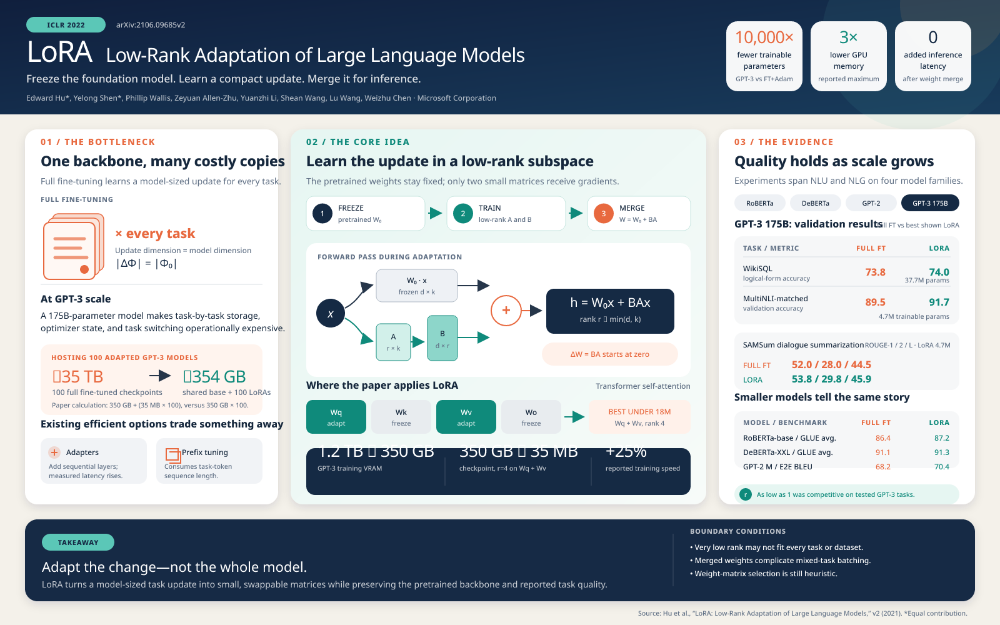
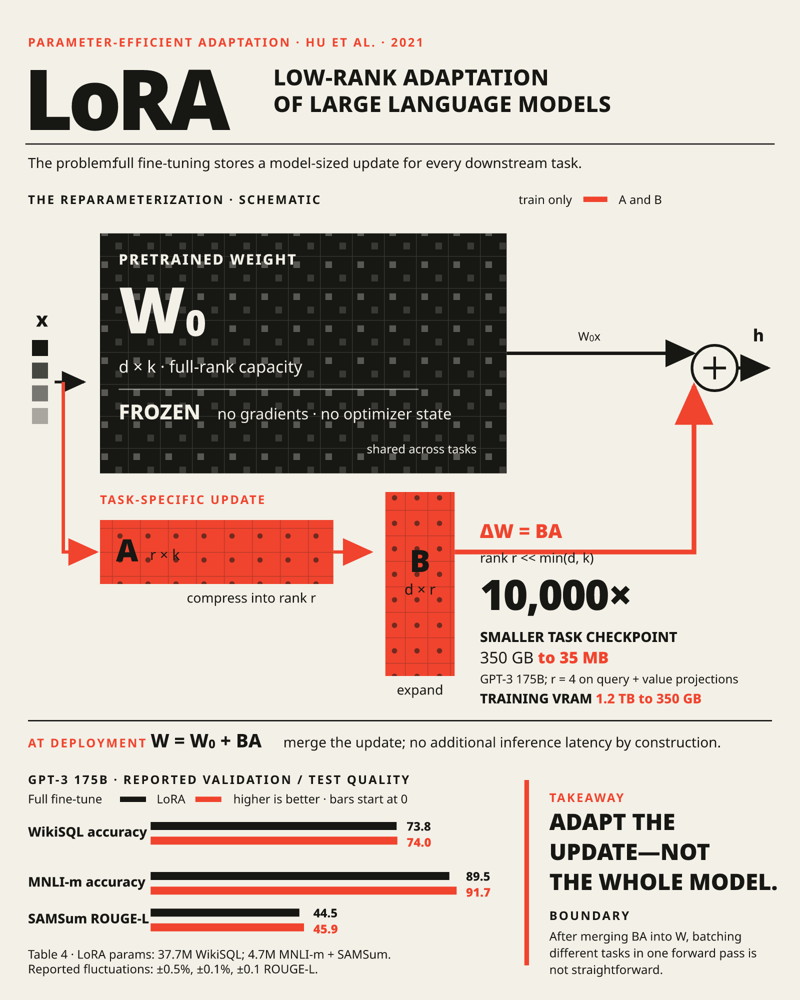

Evolve your
Codex
on
Terminal-Bench 2
在
Terminal-Bench 2
上进化你的
Codex
Build agents that improve — and keep the evidence. RSIHub runs candidates against a frozen evaluator, keeps every generation’s evidence, and carries verified improvements forward — without letting candidate code rewrite the rules that score it. 让智能体持续改进，并保留证据。RSIHub 让候选在冻结的评估器上运行，保留每一代的证据，将经验证的改进传递下去——同时不允许候选代码改写为其打分的规则。
$ git clone https://github.com/simple-agent-lab/RSIHub.git
$ cd RSIHub && ./scripts/setup_terminal_bench.sh ahe
$ ./scripts/run_recipe_demo.sh ahe
gen 0 seed train 60.0% baseline tagged
gen 2 candidate train 68.0% gate ✓ admitted
gen 5 best train 74.0% archive.jsonl stampedSeed and best train scores from the published Codex × AHE run; intermediate generations abridged. seed 与最佳 train 分数来自已发布的 Codex × AHE 运行；中间世代经简化。
Results 基准结果
Audited gains on real benchmarks. 真实基准上可审计的提升。
Scores are percentages shown as seed → evolved agent. The train score is measured on the recipe’s training split; the full benchmark score is measured across the complete benchmark. All runs use a GPT-5.4-high target model and a GPT-5.4-xhigh Codex mutate operator. 分数为百分比，以 seed → 进化后的智能体 呈现。Train 分数在 recipe 的训练划分上测得；完整基准分数在整个基准上测得。所有运行使用 GPT-5.4-high 目标模型与 GPT-5.4-xhigh 的 Codex mutate 操作符。
Terminal-Bench 2
Tau³ Banking
Full results table 完整结果表格
| Benchmark 基准 | Target agent 目标智能体 | Method 方法 | Train score Train 分数 | Full benchmark score 完整基准分数 |
|---|---|---|---|---|
| Terminal-Bench 2 50 train / 19 gate / 20 sealed |
MiniSWE | AHE | 70.0% → 74.0% (+4.0%) |
55.1% → 56.2% (+1.1%) |
| Hyperagents | 58.0% → 68.0% (+10.0%) |
55.1% → 68.5% (+13.4%) |
||
| A-Evolve | 66.0% → 68.0% (+2.0%) |
55.1% → 65.2% (+10.1%) |
||
| GEPA | 58.0% → 68.0% (+10.0%) |
55.1% → 59.6% (+4.5%) |
||
| Codex | AHE | 60.0% → 74.0% (+14.0%) |
60.7% → 66.3% (+5.6%) |
|
| Hyperagents | 58.0% → 72.0% (+14.0%) |
60.7% → 70.8% (+10.1%) |
||
| A-Evolve | 62.0% → 62.0% (0.0%) |
60.7% → 64.0% (+3.3%) |
||
| GEPA | 64.0% → 64.0% (0.0%) |
60.7% → 60.7% (0.0%) |
||
| Tau³ Banking 50 train / 20 gate / 27 sealed |
MiniSWE | AHE | 34.0% → 36.0% (+2.0%) |
12.4% → 22.7% (+10.3%) |
| Hyperagents | 30.0% → 38.0% (+8.0%) |
12.4% → 28.9% (+16.5%) |
||
| A-Evolve | 30.0% → 34.0% (+4.0%) |
12.4% → 24.7% (+12.3%) |
||
| GEPA | 30.0% → 32.0% (+2.0%) |
12.4% → 22.7% (+10.3%) |
||
| Codex | AHE | 32.0% → 36.0% (+4.0%) |
11.3% → 26.8% (+15.5%) |
|
| Hyperagents | 34.0% → 36.0% (+2.0%) |
11.3% → 39.2% (+27.9%) |
||
| A-Evolve | 30.0% → 38.0% (+8.0%) |
11.3% → 13.4% (+2.1%) |
||
| GEPA | 10.0% → 16.0% (+6.0%) |
11.3% → 15.5% (+4.2%) |
How it works 工作原理
One loop. Five strategies. 一个循环，五种策略。
A recipe decides how parents are selected, how traces are analyzed, what may be edited, and which evaluations admit a new generation. The framework owns the mechanism that makes those decisions inspectable: clean candidate snapshots, protected scoring, surface enforcement, Git tags, and stamped archive records. Recipe 决定如何选择父代、如何分析轨迹、哪些内容可以被编辑、以及哪些评估可以准入新的一代。框架则负责让这些决策可检查：干净的候选快照、受保护的打分、变异面约束、Git 标签与盖章的归档记录。
Five built-in recipes compose the loop for different goals: 五个内置 recipe 面向不同目标组合这个循环：
hill_climb
Improve one candidate from its current best parent. 从当前最优父代持续改进单个候选。
targetaevolve
Evolve prompts and reusable agent skills. 进化提示词与可复用的智能体技能。
prompt + target skillsahe
Engineer the agent harness against evaluator feedback. 依据评估器反馈改进 agent harness。
targetgepa
Balance multiple objectives with minibatch validation. 通过 minibatch 验证平衡多个目标。
prompt + task skillhyperagents
Co-evolve the target and the selected evolution policy. 让目标与选定的进化策略共同进化。
target + selected operatorsSee the recipe guide for each strategy’s workflow and configuration. 每个策略的工作流与配置见 recipe 指南。
Showcase
A Skill that learned poster design. 一个学会海报设计的 Skill。
RSIHub can improve a Skill as a complete package: instructions, references, and validation scripts evolve together while a frozen evaluator keeps the comparison honest. In this local Paper2Poster run, the same Codex model and paper prompt produced both LoRA posters below. RSIHub 可以把一个 Skill 作为完整的包来改进：指令、参考资料与验证脚本共同进化，同时由冻结的评估器保证比较的公平。在这次本地 Paper2Poster 运行中，同一个 Codex 模型和同一条论文提示词生成了下面两张 LoRA 海报。


Across the four-paper showcase, the deterministic completion pass rate moved from 1/4 at Gen 0 to 4/4 at Gen 2. This is a representative evolution run rather than a broad benchmark; see the result snapshot, frozen rubric, and minimal seed Skill. 在四篇论文的 showcase 中，确定性完成通过率从 Gen 0 的 1/4 提升到 Gen 2 的 4/4。这是一次代表性的进化运行，而非广泛的基准测试；另见结果快照、冻结的评分标准与最小种子 Skill。
Build agents that improve —
and keep the evidence.
让智能体持续改进，
并保留证据。
Clone the repository and run your first generation in an afternoon. 克隆仓库，一个下午跑通你的第一个世代。
git clone https://github.com/simple-agent-lab/RSIHub.git